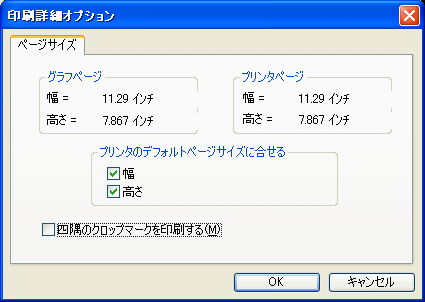
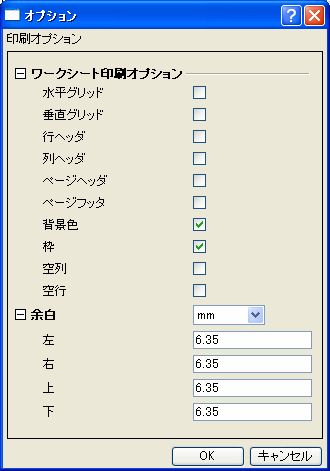

内容 |

このダイアログは、グラフ、関数グラフ、レイアウトページがアクティブのときに、 印刷ダイアログ から開きます。
グラフの作図の詳細ダイアログボックスの印刷ページサイズタブで選択した現在のグラフページサイズを表示します。
現在のプリンタのページサイズを表示します。
現在のプリンタの用紙サイズよりも、大きくまたは小さく、グラフページを印刷し、指定したグラフページの大きさを維持して出力することができます。
プリンタの用紙サイズよりも小さいサイズのグラフページは、1ページ内に印刷されます。グラフの左上の角は、プリンタの用紙サイズの左上の角に合わせられます(プリンタの余白を保持して)。
プリンタの用紙サイズよりも大きいグラフでは、複数ページに分けてグラフを印刷します。
印刷するグラフサイズを制御します。『印刷時、プリンタのデフォルト用紙サイズを使用』グループのオプションにチェックが付いていなければ、大きさグループの幅と高さのテキストボックスの値により、印刷されるグラフの大きさが決まります。幅と高さのチェックボックスにチェックが付いている(デフォルト)と、Originは、『大きさ』グループの設定とは関係なく、グラフページの大きさをプリンタの用紙サイズに合わせて印刷します。
例えば、プリンタの用紙サイズは、幅10インチ、高さ8.5インチの時に、グラフページの幅を20インチ、高さを8インチに設定し、『印刷時、プリンタのデフォルト用紙サイズを使用』グループの『高さ』チェックボックスをオンにしたまま、『幅』チェックボックスをオフにすると(幅20インチ=印刷幅10インチ×2なので)、Originは、グラフを2枚の用紙に印刷します。
| このグループのオプションを「印刷詳細オプション」ダイアログボックスで編集すると、「作図の詳細」ダイアログボックスの設定も更新されます。同様に、「作図の詳細」ダイアログボックスでこれらのオプションを変更すると、その変更は、この印刷時の「印刷詳細オプション」ダイアログボックスにも反映されます。 |
「四隅のクロップマークを印刷する」チェックボックス: プリンタ用紙上の印刷されない領域を示すクロップマークを表示するには、これにチェックをつけます。

このダイアログは、ワークシートまたは行列がアクティブのときに 印刷ダイアログ から開きます。
印刷するワークシート/行列の一部を指定します。例えば、水平または垂直グリッドのチェックボックスにチェックを付けない場合、このワークシートはグリッド無しで印刷されます。
このブランチで、余白の単位を選択して、上下左右の余白を設定します。